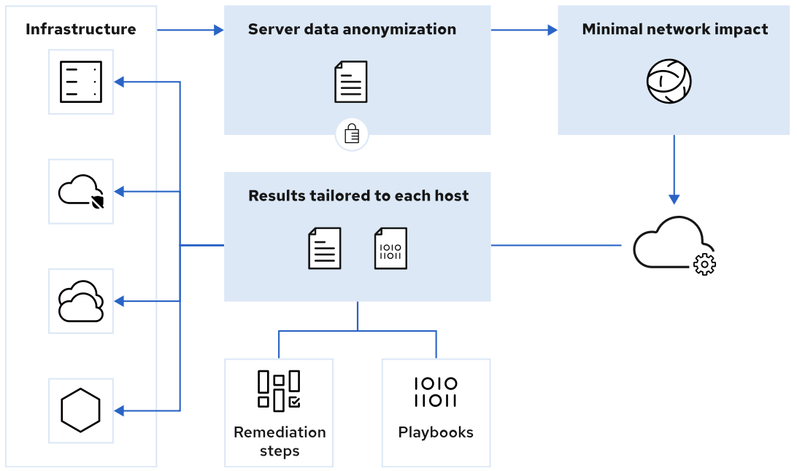

Capítulo 1 - Sistema de accesos y obtener soporte
Edición de texto desde el Shell
- Se utiliza el editor vim
- Tiene el modo visual (se activa al digitar la letra v) y el modo comandos (nativamente al ingresar)
- Presionando la tecla ESC unos segundos puede regresar al modo comandos.
The Minimum, Basic Vim Workflow
| Letra | Acción |
|---|---|
| u | Deshace la última acción |
| x | Borra solo 1 caracter |
| :w | Solo guarda los cambios |
| :wq | Guarda los cambios y sale del editor |
| :q! | Salir sin guardar |
| y ó 'ESC y' p ó 'ESC p' | Selecciona varias filas seleccionadas y las almacena en memoria Pega las filas seleccionadas |
Vim Configuration Files
$ cat /etc/vimrc
$ cat ~/.vimrc
Vim Reference Manual: Vim Options https://vimhelp.org/options.txt.html#options.txt
Configure SSH Key-based Authentication
Configurar llaves de acceso basadas en autenticación sin utilizar password
Se guardan por defecto en:
$ cat ~/.ssh/id_rsa
$ cat ~/.ssh/id_rsa.pub
Generation, Share the Public Key, Non-interactive, Troubleshooting
| Comando | Acción |
|---|---|
| ssh-keygen | Genera la la llave pública y la privada: en el proceso puede asignarle un password llamado passphrase |
| ssh-keygen -f .ssh/nombre_llave | Argumento -f para cambiar el nombre de las llaves |
| ssh-copy-id -i .ssh/key-with-pass.pub user@remotehost | Comparte la llave pública en host remoto NOTA: Si la llave tiene passphrase, se debe escribir la primera ves |
| eval $(ssh-agent) | Iniciar el programa ssh-agent |
| ssh-add | Cargar manualmente su passphrase de llave privada a ~/.ssh/ id_rsa |
| ssh -i .ssh/key-with-pass user@remotehost | Argumento -i sirve para conectarse utilizando una llave específica |
| ssh -v user@remotehost | Argumento -v para realizar Troubleshooting, puede hasta 3 niveles |
NOTA: Durante la creación si ya existe unas llaves con nombres por defecto, estos se reemplazan
#### SSH Client Configuration
$ cat ~/.ssh/config
Create a Diagnostics Report
Resources on the Red Hat Customer Portal
The Red Hat Customer Portal https://access.redhat.com
Navigate the Red Hat Customer Portal Menus
| Categories | Descriopción |
|---|---|
| Products & Services | Información de productos y servicios con sus guiías |
| Tools | Herramientas de ayuda para los productos RH |
| Security | Acceso al centro de productos de seguridad para productos RH |
| Comunity | Portal de comunidades, foros |
Contact Red Hat Customer Support
Apertura de casos de soporte para productos con suscripción
Prepare a Support Case
- Definir el problema especificando los síntomas
- Recopilar la información de referencia: version de producto, un SOS Report, etc
-
Determinar la severidad del caso
3.1. Urgent (severidad 1)
3.2. High (severidad 2)
3.3. Medium (severidad 3)
3.4. Low (severidad 4)
Generate an sos Report with the Web Console
- Login con usuario root, consola en el servidor local (https://localhost:9090) en el apartado Diagnostic Reports
-
Instalar el paquete y luego genera el reporte
[root@host ~]# dnf install sos [root@host ~]# sos report -
Validar si el servicio esté arriba:
[root@host ~]# systemctl status cockpit.socket
Referencias:
Contacting Red Hat Technical Support
Help - Red Hat Customer Portal
Detect and Resolve Issues with Red Hat Insights
Red Hat Insights es una herramienta de analisis predictivo que ayuda a identificar y remediar brechas de seguridad, performance, diponibilidad y estabilidad de los sistemas en la infraestructura de los productos Red Hat. Realiza recomendaciones sobre:
- Red Hat Enterprise Linux 6.4 and later
- Red Hat Virtualization
- Red Hat Satellite 6 and later
- Red Hat OpenShift Container Platform
- Red Hat OpenStack Platform 7 and later
- Red Hat Ansible Automation Platform
Insights high-level architecture

| Comando | Acción |
|---|---|
| insights-client | Refrescar la metadata del cliente |
| subscription-manager register --auto-attach | Registra el sistema interactivamente en RHSM |
| dnf install insights-client | instala el cliente en el sistema |
| insights-client --register | registra el sistema en servicio Insight |
En Red Hat Insights https://console.redhat.com/insights se valida el estaod de los sistemas.
Referencias:
For more information about Red Hat Insights, refer to the Product Documentation for Red Hat Insights
For more information about excluding data that Insights collects, refer to the Red Hat Insights Client Data Obfuscation and Red Hat Insights Client Data Redaction chapters in the Client Configuration Guide for Red Hat Insights
Information about the data that Red Hat Insights collects is available System Information Collected by Red Hat Insights
Manage Files from the Command Line
Describe Linux File System Hierarchy Concepts
La forma es como almacena los archivos en el sistema de manera organizada y con un único árbol de jerarquía
Make Links Between Files
| Comando | Acción | Tipo de Link |
|---|---|---|
| ln file.txt /path_target/file-hl2.txt | crea el hard link | Hard Link |
| ln -il file.txt /path_target/file-hl2.txt | muestra el # de inodo | Hard Link |
| ln -s ~/newfile-l2.txt /tmp/newfile-symlink.txt | Crea el link simbólico | Symbolic Link |
Limitaciones
- Hard link Solo funciona con archivos regulares, no se puede usar con directorios
- Se pueden utilizar si ambos pertenecen al mismo sistema de archivos en hard link
- Un hard link dirige un nombre a los datos de un dispositivo de almacenamiento.
- Un link simbólico apunta un nombre a otro nombre, que apunta a datos en un dispositivo de almacenamiento.
Match File Names with Shell Expansions
| Comando | Acción |
|---|---|
| mkdir glob ; cd glob | ; puede unir varias lineas |
| touch alfa bravo charlie delta | en el ejemplo, el comando touch crea tanto archivos como la lista separada por espacio |
| ls a* | lista el contenido que inicia con letra a |
| ls a | Lista todo lo que contenga la letra a |
| ls [ac]* | Todo lo contenga las letras a o c |
| ls ???? | muestra el contenido que por nombre temga 4 caracteres |
| echo {Sunday,Monday,Tuesday,Wednesday}.log | en el ejemplo echo imprime cada archivo nombrado entre los corchetes |
| echo file{1..3}.txt | imprime los archivos del 1 al 3 |
| echo file{a..c}.txt | muestra los archivos de la a la c |
| echo file{a,b}{1,2}.txt | muestra concatenando las agrupaciones de cada contenido de corchetes |
| echo file{a{1,2},b,c}.txt | concatena de interno a externo |